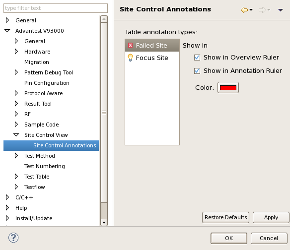

Site Control view - Site Control Annotation preference page
You can change the following preferences on the preference page.
- Show in Overview Rulers
Specify whether the selected annotation type is shown in the Overview Ruler on the right side of the Site Select view.
- Show in Annotation Rulers
Specify whether the selected annotation type is shown in the Annotation Ruler on the left side of the Site Select view.
- Color
Specify the color for the annotation marker of the selected annotation type on the right side of the Site Select view.
- Table Annotations types
- Failed Site
- Focus Site
The following displays the Site Control Annotations preference page.

Functional changes
- Introduced in SmarTest 7.4.1